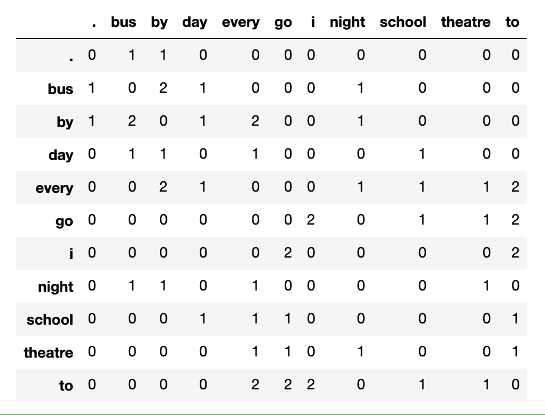

cntext安装一、cntext二、stats三、dictionary3.1 SoPmi 共现法3.2 W2VModels 词向量3.3 co_occurrence_matrix四、 sentiment4.1 senti_by_hownet(text, adj_adv=False)4.2 senti_by_dutir(text)4.3 senti_by_diy(text)4.4 注意五、similarity
cntext
中文文本分析库，可对文本进行词频统计、词典扩充、情绪分析、相似度、可读性等
- github地址
https://github.com/hidadeng/cntext - pypi地址
https://pypi.org/project/cntext/ - 视频课-Python网络爬虫与文本数据分析
功能模块含
- cntext
- stats 文本统计,可读性等
- dictionary 构建词表(典)
- sentiment 情感分析
- similarity 文本相似度
安装
pip install cntext==1.2
一、cntext
查看cntext基本信息
import cntext
help(cntext)Run
Help on package cntext:NAMEcntextPACKAGE CONTENTSdescription (package)dictionary (package)sentiment (package)similarity (package)plot (package)DATAADV_words = ['都', '全', '单', '共', '光', '尽', '净', '仅', '就', '只', '一共', '...CONJ_words = ['乃', '乍', '与', '无', '且', '丕', '为', '共', '其', '况', '厥', '...DUTIR_Ais = {'sigh', '一命呜呼', '一场春梦', '一场空', '一头跌在菜刀上－切肤之痛', '一念之差', .....DUTIR_Haos = {'1兒巴经', '3x', '8错', 'BUCUO', 'Cool毙', 'NB', ...}DUTIR_Jings = {'848', 'FT', '_god', 'yun', '一个骰子掷七点－出乎意料', '一举成名', ......DUTIR_Jus = {'一则以喜，一则以惧', '一发千钧', '一年被蛇咬，三年怕草索', '一座皆惊', '一脸横肉', '一蛇两头...DUTIR_Les = {':)', 'CC', 'Happy', 'LOL', '_so', 'haha', ...}DUTIR_Nus = {'2气斗狠', 'MD', 'TNND', 'gun', 'kao', '一刀两断', ...}DUTIR_Wus = {'B4', 'BD', 'BS', 'HC', 'HJ', 'JJWW', ...}HOWNET_deny = {'不', '不可', '不是', '不能', '不要', '休', ...}HOWNET_extreme = {'万', '万万', '万分', '万般', '不亦乐乎', '不可开交', ...}HOWNET_ish = {'一些', '一点', '一点儿', '不丁点儿', '不大', '不怎么', ...}HOWNET_more = {'多', '大不了', '如斯', '尤甚', '强', '愈', ...}HOWNET_neg = {'一下子爆发', '一下子爆发的一连串', '一不小心', '一个屁', '一仍旧贯', '一偏', ...}HOWNET_pos = {'', '一专多能', '一丝不差', '一丝不苟', '一个心眼儿', '一五一十', ...}HOWNET_very = {'不为过', '不少', '不胜', '不过', '何啻', '何止', ...}STOPWORDS_en = {'a', 'about', 'above', 'across', 'after', 'afterwards'...STOPWORDS_zh = {'、', '。', '〈', '〉', '《', '》', ...}FORMAL_pos_words = ['100强', '3A级', '50强', 'AAA级', 'AAA企业', '爱戴',..]FORMAL_neg_words = ['安于现状', '暗藏', '暗淡', '暗黑', '暗流', ..]UNFORMAL_pos_words = ['爱心','安定','安全','安然无恙','安泰','霸主',...]UNFORMAL_neg_words = ['哀鸿遍野','肮脏','罢免','白痴','败笔','败诉','半信半疑'..]FILE/Library/Frameworks/Python.framework/Versions/3.7/lib/python3.7/site-packages/cntext/__init__.py
from cntext import dict_info
dict_info()Run
【大连理工大学情感本体库】七大情绪分类，依次是哀、恶、好、惊、惧、乐、怒；对应的情绪词表依次：DUTIR_Ais = {"泣血捶膺", "望断白云", "日暮途穷", "身微力薄"...}DUTIR_Wus = {"饰非遂过", "恶语", "毁害", "恶籍盈指", "脾气爆躁", "淫贱", "凌乱"...}DUTIR_Haos = {"打破砂锅璺到底", "多彩", "披沙拣金", "见机行事", "精神饱满"...}DUTIR_Jings = {"骇人视听", "拍案惊奇", "悬念", "无翼而飞", "原来", "冷门"...}DUTIR_Jus ={"山摇地动", "月黑风高", "流血", "老鼠偷猫饭－心惊肉跳", "一发千钧"...}DUTIR_Les ={"含哺鼓腹", "欢呼鼓舞", "莺歌蝶舞", "将伯之助", "逸兴横飞", "舒畅"...}DUTIR_Nus = {"怨气满腹", "面有愠色", "愤愤", "直眉瞪眼", "负气斗狠", "挑眼"...}【知网Hownet词典】含正负形容词、否定词、副词等词表，对应的词表依次:HOWNET_deny = {"不", "不是", "不能", "不可"...}HOWNET_extreme = {"百分之百", "倍加", "备至", "不得了"...}HOWNET_ish = {"点点滴滴", "多多少少", "怪", "好生", "还", "或多或少"...}HOWNET_more = {"大不了", "多", "更", "比较", "更加", "更进一步", "更为", "还", "还要"...}HOWNET_neg = {"压坏", "鲁莽的", "被控犯罪", "银根紧", "警惕的", "残缺", "致污物", "柔弱"...}HOWNET_pos = {"无误", "感激不尽", "受大众欢迎", "敬礼", "文雅", "一尘不染", "高精度", "兴盛"...}HOWNET_very = {"不为过", "超", "超额", "超外差", "超微结构", "超物质", "出头"...}【停用词表】中英文停用词表，依次STOPWORDS_zh = {"经", "得", "则甚", "跟", "好", "具体地说"...}STOPWORDS_en = {'a', 'about', 'above', 'across', 'after'...}【中文副词/连词】副词ADV、连词CONJADV_words = ['都', '全', '单', '共', '光'...}CONJ_words = ['乃', '乍', '与', '无', '且'...}【金融情绪词典】姚加权,冯绪,王赞钧,纪荣嵘,张维.语调、情绪及市场影响:基于金融情绪词典[J].管理科学学报,2021,24(05):26-46.#正式-肯定情绪词典FORMAL_pos_words = ['100强', '3A级', '50强', 'AAA级', 'AAA企业', '爱戴',...]#正式-否定情绪词典FORMAL_neg_words = ['安于现状', '暗藏', '暗淡', '暗黑', '暗流', ...]#非正式-肯定情绪词典UNFORMAL_pos_words = ['爱心','安定','安全','安然无恙','安泰','霸主',...]#非正式-否定情绪词典UNFORMAL_neg_words = ['哀鸿遍野','肮脏','罢免','白痴','败笔','败诉','半信半疑'...]
查看词表
from cntext import CONJ_words, ADV_words
#获取连词词表CONJ_wordsRun
['乃','乍','与','无','且','丕','为','共','其','况','厥','则','那','兼',...]
二、stats
目前含
- term_freq 词频统计函数，返回Counter类型
- readability 中文可读性
from cntext.stats import term_freq, readability
text = '如何看待一网文作者被黑客大佬盗号改文，因万分惭愧而停更'term_freq(text)xxxxxxxxxxCounter({'看待': 1,'网文': 1,'作者': 1,'黑客': 1,'大佬': 1,'盗号': 1,'改文因': 1,'万分': 1,'惭愧': 1,'停': 1})
中文可读性 算法参考自
徐巍,姚振晔,陈冬华.中文年报可读性：衡量与检验[J].会计研究,2021(03):28-44.
- readability1 ---每个分句中的平均字数
- readability2 ---每个句子中副词和连词所占的比例
- readability3 ---参考Fog Index， readability3=(readability1+readability2)×0.5
以上三个指标越大，都说明文本的复杂程度越高，可读性越差。
xxxxxxxxxxreadability(text)xxxxxxxxxx{'readability1': 27.0,'readability2': 0.17647058823529413,'readability3': 13.588235294117647}
三、dictionary
本模块用于构建词表(典),含
- SoPmi 共现法扩充词表(典)
- W2VModels 词向量word2vec扩充词表(典)
3.1 SoPmi 共现法
xxxxxxxxxxfrom cntext.dictionary import SoPmiimport os
sopmier = SoPmi(cwd=os.getcwd(), input_txt_file='data/sopmi_corpus.txt', #原始数据，您的语料 seedword_txt_file='data/sopmi_seed_words.txt', #人工标注的初始种子词 )
sopmier.sopmi()Run
xxxxxxxxxxstep 1/4:...seg corpus ...Loading model cost 0.678 seconds.Prefix dict has been built successfully.step 1/4 finished:...cost 60.78995203971863...step 2/4:...collect cowords ...step 2/4 finished:...cost 0.6169600486755371...step 3/4:...compute sopmi ...step 1/4 finished:...cost 0.26422882080078125...step 4/4:...save candiwords ...finished! cost 61.8965539932251
3.2 W2VModels 词向量
xxxxxxxxxxfrom cntext.dictionary import W2VModelsimport os
#初始化模型model = W2VModels(cwd=os.getcwd()) #语料数据 w2v_corpus.txtmodel.train(input_txt_file='data/w2v_corpus.txt')
#根据种子词，筛选出没类词最相近的前100个词model.find(seedword_txt_file='data/w2v_seeds/integrity.txt', topn=100)model.find(seedword_txt_file='data/w2v_seeds/innovation.txt', topn=100)model.find(seedword_txt_file='data/w2v_seeds/quality.txt', topn=100)model.find(seedword_txt_file='data/w2v_seeds/respect.txt', topn=100)model.find(seedword_txt_file='data/w2v_seeds/teamwork.txt', topn=100)Run
xxxxxxxxxx数据预处理开始.......预处理结束...........Word2Vec模型训练开始......已将模型存入 /Users/Desktop/cntext/test/output/w2v_candi_words/w2v.model准备寻找每个seed在语料中所有的相似候选词初步搜寻到 572 个相似的候选词计算每个候选词 与 integrity 的相似度， 选出相似度最高的前 100 个候选词已完成 【integrity 类】 的词语筛选，并保存于 /Users/Desktop/cntext/test/output/w2v_candi_words/integrity.txt， 耗时 46 秒准备寻找每个seed在语料中所有的相似候选词初步搜寻到 516 个相似的候选词计算每个候选词 与 innovation 的相似度， 选出相似度最高的前 100 个候选词已完成 【innovation 类】 的词语筛选，并保存于 /Users/Desktop/cntext/test/output/w2v_candi_words/innovation.txt， 耗时 46 秒准备寻找每个seed在语料中所有的相似候选词初步搜寻到 234 个相似的候选词计算每个候选词 与 quality 的相似度， 选出相似度最高的前 100 个候选词已完成 【quality 类】 的词语筛选，并保存于 /Users/Desktop/cntext/test/output/w2v_candi_words/quality.txt， 耗时 46 秒准备寻找每个seed在语料中所有的相似候选词初步搜寻到 243 个相似的候选词计算每个候选词 与 respect 的相似度， 选出相似度最高的前 100 个候选词已完成 【respect 类】 的词语筛选，并保存于 /Users/Desktop/cntext/test/output/w2v_candi_words/respect.txt， 耗时 46 秒准备寻找每个seed在语料中所有的相似候选词初步搜寻到 319 个相似的候选词计算每个候选词 与 teamwork 的相似度， 选出相似度最高的前 100 个候选词已完成 【teamwork 类】 的词语筛选，并保存于 /Users/Desktop/cntext/test/output/w2v_candi_words/teamwork.txt， 耗时 46 秒
3.3 co_occurrence_matrix
词共现矩阵
xxxxxxxxxxfrom cntext.dictionary import co_occurrence_matrix
documents = ["I go to school every day by bus .", "i go to theatre every night by bus"]
co_occurrence_matrix(documents, window_size=2, lang='english')
xxxxxxxxxxdocuments2 = ["编程很好玩", "Python是最好学的编程"]
co_occurrence_matrix(documents2, window_size=2, lang='chinese')
四、 sentiment
- senti_by_hownet 使用知网Hownet词典对文本进行情感分析
- senti_by_dutir 使用大连理工大学情感本体库dutir对文本进行情绪分析
- senti_by_diydict 使用自定义词典 对文本进行情感分析
4.1 senti_by_hownet(text, adj_adv=False)
使用知网Hownet词典进行(中)文本数据的情感分析，统计正、负情感信息出现次数(得分)
- text: 待分析的中文文本数据
- adj_adv: 是否考虑副词（否定词、程度词）对情绪形容词的反转和情感强度修饰作用，默认False。默认False只统计情感形容词出现个数；
xxxxxxxxxxfrom cntext.sentiment import senti_by_hownet
text = '今天股票大涨，心情倍爽，非常开心啊。'
senti_by_dutir(text)Run
xxxxxxxxxx{'word_num': 12,'sentence_num': 2,'stopword_num': 4,'好_num': 0,'乐_num': 1,'哀_num': 0,'怒_num': 0,'惧_num': 0,'恶_num': 0,'惊_num': 0}
考虑副词（否定词、程度词）对情绪形容词的反转和情感强度修饰作用
xxxxxxxxxxsenti_by_hownet(text, adj_adv=True)Run
xxxxxxxxxx{'sentence_num': 1,'word_num': 12,'stopword_num': 3,'pos_score': 13.0,'neg_score': 0.0}
4.2 senti_by_dutir(text)
使用大连理工大学情感本体库对文本进行情绪分析，统计各情绪词语出现次数。
xxxxxxxxxxfrom cntext.sentiment import senti_by_dutir
text = '今天股票大涨，心情倍爽，非常开心啊。'
senti_by_dutir(text)Run
xxxxxxxxxx{'word_num': 12,'sentence_num': 2,'stopword_num': 4,'好_num': 0,'乐_num': 1,'哀_num': 0,'怒_num': 0,'惧_num': 0,'恶_num': 0,'惊_num': 0}
情绪分析使用的大连理工大学情感本体库，如发表论文，请注意用户许可协议
如果用户使用该资源发表论文或取得科研成果，请在论文中添加诸如“使用了大连理工大学信息检索研究室的情感词汇本体” 字样加以声明。
参考文献中加入引文“徐琳宏,林鸿飞,潘宇,等.情感词汇本体的构造[J]. 情报学报, 2008, 27(2): 180-185.”
4.3 senti_by_diy(text)
使用diy词典进行情感分析，计算各个情绪词出现次数，未考虑强度副词、否定词对情感的复杂影响，
- text: 待分析中文文本
- sentiwords: 情感词字典； {'category1': 'category1 词语列表', 'category2': 'category2词语列表', 'category3': 'category3词语列表', ... }
xxxxxxxxxxsentiwords = {'pos': ['开心', '愉快', '倍爽'], 'neg': ['难过', '悲伤'], 'adv': ['倍']}
text = '今天股票大涨，心情倍爽，非常开心啊。'senti_by_diydict(text, sentiwords)Run
xxxxxxxxxx{'pos_num': 1,'neg_num': 0,'adv_num': 1,'stopword_num': 4,'sentence_num': 2,'word_num': 12}
4.4 注意
返回结果: num表示词语出现次数； score是考虑副词、否定词对情感的修饰，结果不是词频，是情感类别的得分。
五、similarity
使用cosine、jaccard、miniedit等计算两文本的相似度，算法实现参考自
Cohen, Lauren, Christopher Malloy, and Quoc Nguyen. Lazy prices. No. w25084. National Bureau of Economic Research, 2018.
xxxxxxxxxxfrom cntext.similarity import similarity_scoretext1 = '编程真好玩编程真好玩'text2 = '游戏真好玩编程真好玩'similarity_score(text1, text2)
Run
xxxxxxxxxx{'Sim_Cosine': 0.816496580927726,'Sim_Jaccard': 0.6666666666666666,'Sim_MinEdit': 1,'Sim_Simple': 0.9183673469387755}